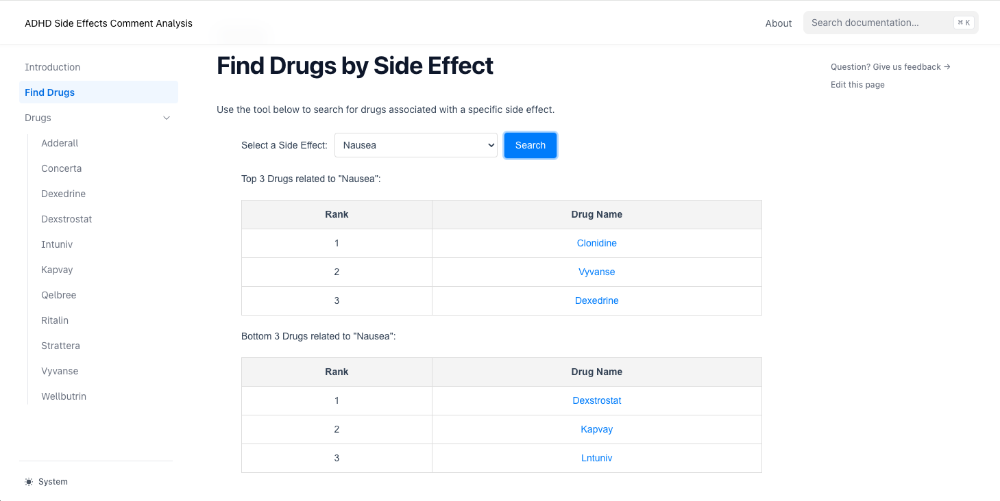

Side Effect Analysis Pipeline
Project Overview
This project analyzes user reviews from Reddit and Drugs.com to identify and rank potential side effects of ADHD medications. Using BioBERT embeddings, keyword expansion, sentiment analysis, and similarity analysis, the system extracts, scores, and ranks drug-related side effects from user-generated content and compares them against official side effect data retrieved from openFDA.
The pipeline combines Natural Language Processing (NLP) and machine learning techniques to:
- Preprocess and clean raw review data.
- Expand official side effect keywords with WordNet and BioBERT.
- Perform sentiment analysis to focus on negative user experiences.
- Calculate similarity between user comments and expanded side effect keywords.
- Rank side effects for each drug and extract relevant user comments.
Usage
If you haven’t had your poetry setup, please following the step in Installation Package part below.
Prepare Input Data:
- Place raw Reddit and Drugs.com review data in the
datadirectory.
- Place raw Reddit and Drugs.com review data in the
Run the Pipeline: Execute the
apply.pyscript to clean, process, and analyze the reviews:poetry run python src/side_effect/apply.pyOptional Command-Line Arguments:
--process_data: Preprocess input data before running the analysis.--drug: Specify a list of drugs to analyze.--side_effect: Specify side effects to focus the analysis on.
poetry run python src/side_effect/apply.py --process_dataAnalyze specific drugs and side effects:
poetry run python src/side_effect/apply.py -d Adderall,Ritalin -se Insomnia,NauseaOutput Files:
output/side_effect_scores.csvcontains ranked side effects.
Example Output for side_effect_scores.csv
| Drug Name | Side Effect | Score |
|---|---|---|
| Adderall | Insomnia | 5.573 |
| Adderall | Nausea | 4.752 |
| Adderall | Headache | 4.749 |
output/top_k_comments.csvlists the most relevant user comments.
Example Output for top_k_comments.csv
| Drug Name | Side Effect | Comment | Score |
|---|---|---|---|
| Adderall | Insomnia | “I couldn’t sleep at all after taking this.” | 5.573 |
| Vyvanse | Nausea | “This drug made me feel nauseous all day.” | 4.752 |
| Ritalin | Headache | “I developed a severe headache after use.” | 4.749 |
output/{drug}_rank.csvprovides drug-specific side effect rankings.
Example Output for {drug}_rank.csv
| rank | Side Effect | Comment |
|---|---|---|
| top1 | Insomnia | “I couldn’t sleep at all after taking this.” |
| top2 | Nausea | “This drug made me feel nauseous all day.” |
| tail1 | Headache | “I developed a severe headache after use.” |
| tail2 | Pain | “I developed a severe headache after use.” |
Data Link: Google Drive
Key Features
Data Collection and Cleaning:
- Reviews from Reddit and Drugs.com are preprocessed, cleaned, and stored in structured CSV files.
Sentiment Analysis:
- Negative comments are extracted using VADER Sentiment Analyzer (from NLTK).
- Positive comments are removed to focus on reviews indicating adverse experiences.
Keyword Expansion:
- Official side effect keywords are expanded using WordNet synonyms and BioBERT embeddings.
- Enhances coverage and accuracy of side effect detection.
Similarity Analysis:
- Computes cosine similarity between expanded keywords and user comment embeddings using BioBERT.
- Identifies comments closely associated with specific side effects.
Ranking and Scoring:
- Side effects are ranked based on their relevance scores.
- Top K comments for each drug and side effect are extracted for analysis.
Outputs:
- Cleaned and processed comments.
- Ranked side effects and their relevance scores.
- Comments most relevant to identified side effects.
Main Content in Project Directory Structure
├── data
│ ├── cleaned_reddit # Cleaned Reddit review data
│ ├── raw_reddit # Raw Reddit data
│ ├── simulants_reviews.csv # Drugs.com simulants reviews
│ ├── non_simulants_reviews.csv # Drugs.com non-simulants reviews
│ └── side_effects.csv # Official side effects (OpenFDA)
│
├── src
│ └── side_effect
│ ├── data_processing.py # Processes entire data sets to obtain data with proper structure and contents
│ ├── data_processing_reddit.py # Processes Reddit reviews
│ ├── embedding_and_keywords.py # BioBERT and WordNet for keyword expansion
│ ├── analysis.py # Similarity and ranking analysis
│ └── side_effect.py # Core utilities for cleaning & filtering (including sentiment analysis and selecting comments with certain limitation)
│ └── apply.py # Main script:runs the entire pipeline
│
├── output
│ ├── side_effect_scores.csv # Ranked side effects with scores
│ ├── top_k_comments.csv # Top K comments related to side effects
│ └── new_comment_dict.csv # Processed comments with side effect matches
│
├── website # Front-end components for visualization
│ ├── components # React components
│ └── pages # Webpages for each drug
│
├── README.md # Documentation (you are here)
├── LICENSE # Project license
└── pyproject.tomlPipeline Diagram
Below is the high-level architecture of the side effect analysis pipeline:
The process of determining the most relevant comments for a given side effect is as follows:
The process for determining the number of most relevant comments and subsequently calculating the relevance score between the input drug and side effect is as follows:

Installation Package
Clone the Repository
First, clone the repository using Git:
git clone https://github.com/xinzhouli00/side_effect.git cd side_effectInstall Dependencies
Within the cloned directory, run the following command to install the project dependencies with Poetry:
poetry installThis command will create a virtual environment and install all the dependencies specified in the pyproject.toml file.
Activate the Virtual Environment
poetry shellUpdating Dependencies
To update the dependencies to their latest compatible versions, run:
poetry update
Test
Run tests using:
pytest -v testsDemostration Website
Our project processes three key data sources and converts them into JSON format for website visualization:
- User Reviews Analysis (
reviews.json) - Side Effect Scores (
drugSideEffectsData.json) - FDA Report Analysis (
formatted_drug_reactions.json)
Our merge_data_json.py script handles the conversion of CSV files to JSON format and their placement in the website directory:
project/
├── merge_data_json.py # Data conversion script
├── output/ # Processed CSV files
│ ├── side_effect_scores.csv
│ ├── drug_reactions.csv
│ └── merged_drug_data.csv
└── website/
└── public/
└── data/ # JSON files for website
├── reviews.json
├── drugSideEffectsData.json
└── formatted_drug_reactions.jsonProcessing Steps:
- Script reads CSV files from
output/directory - Converts data to appropriate JSON format
- Automatically saves files to
website/public/data/ - Files become accessible to website components
File Mapping:
side_effect_scores.csv→drugSideEffectsData.jsondrug_reactions.csv→formatted_drug_reactions.jsonmerged_drug_data.csv→reviews.json
These JSON files are placed in the website/public/data/ directory and are utilized by the website for:
- Interactive visualizations
- Drug comparison features
- Side effect frequency analysis
- User experience insights
To run the website:
pnpm i # Install dependencies
pnpm dev # Start development serverThen visit localhost:3000 to view the interactive dashboard.
How to Use Our ADHD Medication Side Effect Analysis Tool
Our website provides two main features to help users understand and compare ADHD medication side effects:
Individual Drug Pages
 Each medication has a dedicated page showing:
Each medication has a dedicated page showing:
- Side Effects Comparison
- FDA-reported side effects ranking
- User review-based side effects ranking
- Allows users to compare official data with real user experiences
- Social Sentiments
- Actual user comments and experiences
- Provides real-world context for side effects
Find Drugs by Side Effect Feature
 This tool helps users make informed decisions about medication choices:
- Search Function
- Select a specific side effect from dropdown menu
- Click “Search” to view results
- Results Display
- Shows Top 3 drugs with strongest association to the selected side effect
- Shows Bottom 3 drugs with weakest association
- Helps users identify medications that might minimize specific side effects
- Interactive Navigation
- Click on any drug name to view its detailed page
- Allows users to learn more about medications with promising profiles
This tool is particularly useful for:
- Users concerned about specific side effects
- Healthcare providers discussing medication options
- Anyone seeking to understand ADHD medication trade-offs
Future Plans
Model Optimization:
- Improve the performance of similarity scoring and ranking algorithms to enhance accuracy.
Vocabulary Expansion:
- Include more diverse and comprehensive terms in the keyword expansion process to improve coverage of side effect detection.
Audience Segmentation:
- Segment users into different groups to gain a more nuanced understanding of feedback and side effect patterns.
Advanced Similarity Matching:
- Experiment with various similarity measures to determine the most effective method for matching and analyzing textual data.
Frontend-Backend Integration:
- Develop robust interfaces for seamless updates to the data pipeline and ensure the results are dynamically reflected in the front-end visualization.
Team Members
- Siyu Hu
- Xinzhou Li
- Qingyang Wang
- Shengmian Wang
License
This project is licensed under the MIT License. See the LICENSE file for details.
Acknowledgments
- BioBERT model: DMIS Lab
- OpenFDA: Source for official side effects data. OpenFDA
- NLTK WordNet: For keyword expansion.
- VADER Sentiment Analyzer: For sentiment filtering.
This README provides a comprehensive overview of the project, including its objectives, structure, installation, usage, and outputs.